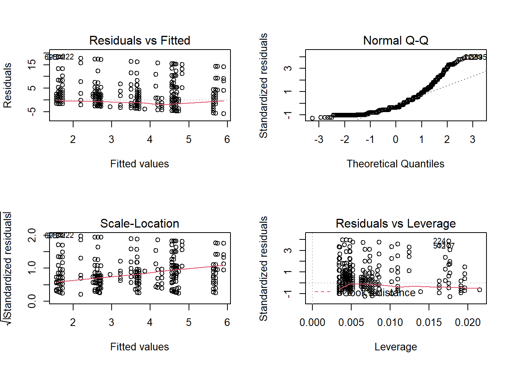

# New packages that need to be installed
install.packages("gvlma") #to check assumptions of linear regression
install.packages("MASS") #for negative binomial regression
install.packages("censReg") #for tobit regression# Load needed packages
library(openxlsx)
library(tidyverse)
library(gvlma)
library(MASS)
library(censReg)# Read data
data <- read.xlsx("Long Data.xlsx",1)# Preparing some variables for regression
# 1. All scenario variables recoded to 0 and 1 where 1 represents the "X" choice
ScenarioVars <- grep("Scenario",names(data))
data[,ScenarioVars] <- lapply(data[,ScenarioVars], function(x)ifelse(x=="X",1,0) )
# 2. Create dummy variables for gender and financial status
data$Female <- ifelse(data$Gender=="Female",1,0)
data$Medium <- ifelse(data$FinancialStatus=="Medium",1,0)
data$High <- ifelse(data$FinancialStatus=="High",1,0)
# 3. Create dummy variables for treatment
data$Pride <- ifelse(data$Treatment=="Pride",1,0)
# 4. Create a new variable with the count of times a subject chose option "X" in the vars Scenario1 to Scenario8
data <- data %>%
mutate(CountX = Scenario1+Scenario2+Scenario3+Scenario4+Scenario5+Scenario6+
Scenario7+Scenario8)# Fit a linear regression for the dependent variable contribution
linear_model <- lm(Contribution ~ Female + Age + Medium + High + Pride, data=data)
summary(linear_model)##
## Call:
## lm(formula = Contribution ~ Female + Age + Medium + High + Pride,
## data = data)
##
## Residuals:
## Min 1Q Median 3Q Max
## -5.901 -3.229 -1.638 1.897 18.382
##
## Coefficients:
## Estimate Std. Error t value Pr(>|t|)
## (Intercept) 2.12253 2.75097 0.772 0.44058
## Female -1.02702 0.37197 -2.761 0.00588 **
## Age 0.05268 0.12452 0.423 0.67236
## Medium 0.41884 0.61264 0.684 0.49436
## High -0.53133 0.61905 -0.858 0.39096
## Pride 1.99046 0.31254 6.369 3.03e-10 ***
## ---
## Signif. codes: 0 '***' 0.001 '**' 0.01 '*' 0.05 '.' 0.1 ' ' 1
##
## Residual standard error: 4.63 on 902 degrees of freedom
## (52 observations deleted due to missingness)
## Multiple R-squared: 0.06525, Adjusted R-squared: 0.06007
## F-statistic: 12.59 on 5 and 902 DF, p-value: 7.667e-12Linear regression makes several assumptions about the data, such as :
# Diagnostic plots
par(mfrow = c(2, 2))
plot(linear_model)
Residuals vs Fitted. Used to check the linear relationship assumptions. A horizontal line, without distinct patterns is an indication for a linear relationship.
Normal Q-Q. Used to examine whether the residuals are normally distributed. It’s good if residuals points follow the straight dashed line.
Scale-Location (or Spread-Location). Used to check the homogeneity of variance of the residuals (homoscedasticity). Horizontal line with equally spread points is a good indication of homoscedasticity.
Residuals vs Leverage. Used to identify influential cases, that is extreme values that might influence the regression results when included or excluded from the analysis.
For more information click here
# A second useful function is provided by the gvlma function in the gvlma package which will quickly check 5 assumptions for you.
gvlma(linear_model)##
## Call:
## lm(formula = Contribution ~ Female + Age + Medium + High + Pride,
## data = data)
##
## Coefficients:
## (Intercept) Female Age Medium High Pride
## 2.12253 -1.02702 0.05268 0.41884 -0.53133 1.99046
##
##
## ASSESSMENT OF THE LINEAR MODEL ASSUMPTIONS
## USING THE GLOBAL TEST ON 4 DEGREES-OF-FREEDOM:
## Level of Significance = 0.05
##
## Call:
## gvlma(x = linear_model)
##
## Value p-value Decision
## Global Stat 673.628 0.000e+00 Assumptions NOT satisfied!
## Skewness 386.274 0.000e+00 Assumptions NOT satisfied!
## Kurtosis 256.479 0.000e+00 Assumptions NOT satisfied!
## Link Function 22.940 1.671e-06 Assumptions NOT satisfied!
## Heteroscedasticity 7.934 4.851e-03 Assumptions NOT satisfied!For more information click here
# Fit a logistic regression for choice of "X" in Scenario 1
logit_model <- glm(Scenario1 ~ Age + Female + Medium + High, family = binomial("logit"), data = data)
summary(logit_model)##
## Call:
## glm(formula = Scenario1 ~ Age + Female + Medium + High, family = binomial("logit"),
## data = data)
##
## Deviance Residuals:
## Min 1Q Median 3Q Max
## -1.501 -1.302 0.929 1.035 1.340
##
## Coefficients:
## Estimate Std. Error z value Pr(>|z|)
## (Intercept) -0.49599 1.20302 -0.412 0.68013
## Age 0.01963 0.05435 0.361 0.71794
## Female -0.29101 0.16321 -1.783 0.07458 .
## Medium 0.73974 0.26121 2.832 0.00463 **
## High 0.64235 0.26152 2.456 0.01404 *
## ---
## Signif. codes: 0 '***' 0.001 '**' 0.01 '*' 0.05 '.' 0.1 ' ' 1
##
## (Dispersion parameter for binomial family taken to be 1)
##
## Null deviance: 1304.1 on 959 degrees of freedom
## Residual deviance: 1292.3 on 955 degrees of freedom
## AIC: 1302.3
##
## Number of Fisher Scoring iterations: 4## odds ratios and 95% CI
exp(cbind(OR = coef(logit_model), confint(logit_model)))## Waiting for profiling to be done...## OR 2.5 % 97.5 %
## (Intercept) 0.6089675 0.05662796 6.368045
## Age 1.0198275 0.91731184 1.135554
## Female 0.7475111 0.54127204 1.026994
## Medium 2.0953953 1.25972633 3.519868
## High 1.9009514 1.14209391 3.195014# Fit a negative binomial regression for CountX
nb_model <- glm.nb(CountX ~ Age + Female + Medium + High, data = data)
summary(nb_model)##
## Call:
## glm.nb(formula = CountX ~ Age + Female + Medium + High, data = data,
## init.theta = 1.606081009, link = log)
##
## Deviance Residuals:
## Min 1Q Median 3Q Max
## -2.10391 -1.10456 -0.00541 0.63810 0.99960
##
## Coefficients:
## Estimate Std. Error z value Pr(>|z|)
## (Intercept) 1.84919 0.54065 3.420 0.000625 ***
## Age -0.02262 0.02438 -0.928 0.353664
## Female -0.09030 0.07241 -1.247 0.212335
## Medium 0.16144 0.12131 1.331 0.183269
## High 0.18712 0.12153 1.540 0.123621
## ---
## Signif. codes: 0 '***' 0.001 '**' 0.01 '*' 0.05 '.' 0.1 ' ' 1
##
## (Dispersion parameter for Negative Binomial(1.6061) family taken to be 1)
##
## Null deviance: 1213.8 on 959 degrees of freedom
## Residual deviance: 1209.6 on 955 degrees of freedom
## AIC: 4902.6
##
## Number of Fisher Scoring iterations: 1
##
##
## Theta: 1.606
## Std. Err.: 0.125
##
## 2 x log-likelihood: -4890.564# Fit a tobit model to Contribution with both left and right censoring
tobit_model <- censReg(Contribution ~ Age + Female + Medium + High + Pride,
left=0, right=20,
data =data)
summary(tobit_model)##
## Call:
## censReg(formula = Contribution ~ Age + Female + Medium + High +
## Pride, left = 0, right = 20, data = data)
##
## Observations:
## Total Left-censored Uncensored Right-censored
## 908 391 496 21
##
## Coefficients:
## Estimate Std. error t value Pr(> t)
## (Intercept) 4.74537 4.80564 0.987 0.3234
## Age -0.20922 0.21839 -0.958 0.3381
## Female -1.58540 0.63949 -2.479 0.0132 *
## Medium 1.05533 1.06346 0.992 0.3210
## High -0.60191 1.07819 -0.558 0.5767
## Pride 3.31247 0.54573 6.070 1.28e-09 ***
## logSigma 2.00168 0.03515 56.941 < 2e-16 ***
## ---
## Signif. codes: 0 '***' 0.001 '**' 0.01 '*' 0.05 '.' 0.1 ' ' 1
##
## Newton-Raphson maximisation, 6 iterations
## Return code 8: successive function values within relative tolerance limit (reltol)
## Log-likelihood: -2014.797 on 7 Df